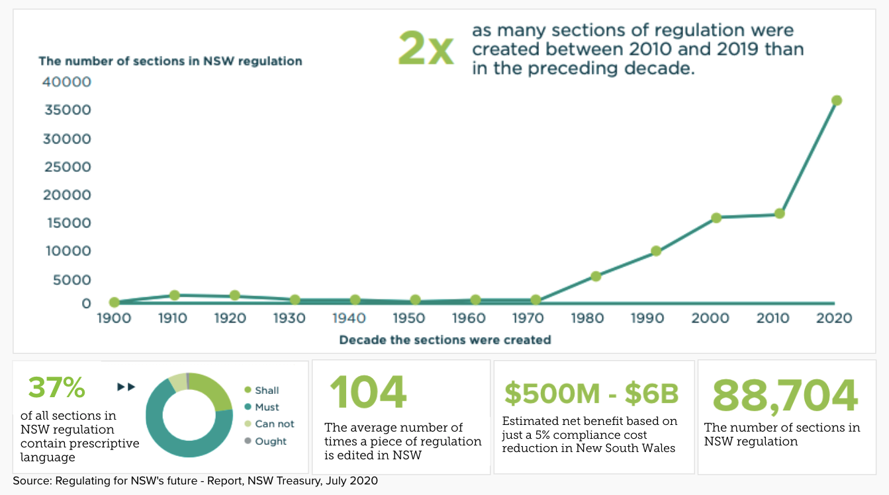
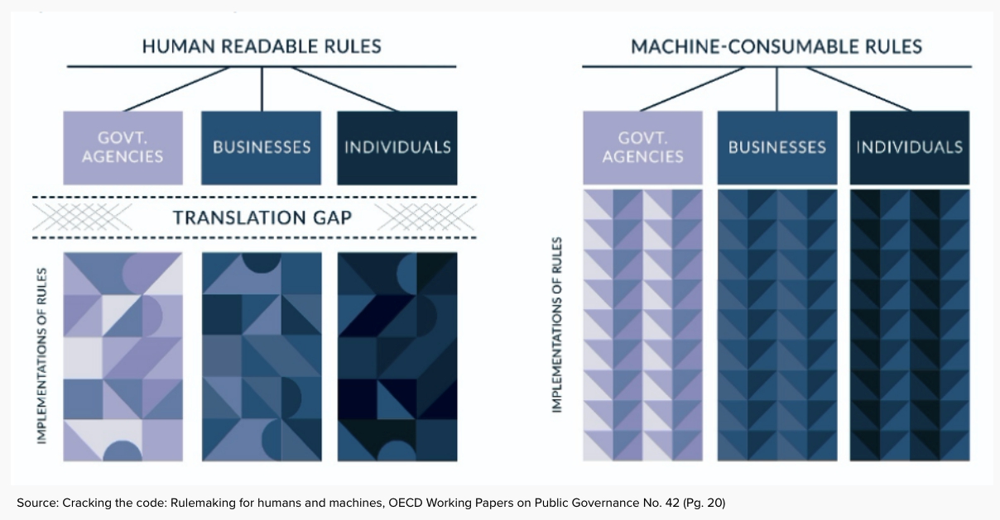

Rules as Code
What it means, and why we're doing it
Transformation Unit, DCS
Transformation
Transformation is a process of profound and whole of system change that orients an organisation in a new direction and an entirely new level of effectiveness.Â
Lets code the rules once
So that everyone uses the same ones
and
Rule changes are propagated across applications
The need for Rules as code
Often the interaction between rules is incomprehensible to mere humans...

Lets do it better
- By helping a computer to understand the rules, we ensure they are logical and make sense
- Rules and computer systems become easier to integrate with, test, and modify
- By giving customers the correct interpretation, faster - we improve their experience
Rules as code has the potential to:
- Improve outcomes
- Increase efficiency
- Help make better rules
... for both our customers and staff
Benefits of Rules as code
What are we doing?
- Manually translating prescriptive rules into computer code
- Publishing this translation, so computer systems can use it
- Testing our interpretation of the rules with clear, reproducible test data
Core value proposition
Community Gaming Regulation 2020
Improved experience for compliance


Test Case - Example
- name: Organisation is conducting a charity housie that is permitted
period: 2020-07
input:
is_charity: True
gaming_activity_is_charity_housie: True
proceeds_to_benefitting_organisation: 3900
gross_proceeds_from_gaming_activity: 4000
total_expenses_for_conducting_gaming_activity: 100
total_prize_value_from_single_gaming_session: 2000
number_of_tickets: 40
output:
charity_housie__game_meets_criteria: True
charity_housie__authority_required: False
Let us know how we can help you make compliance easier for your customers!